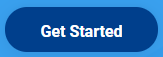

Installatie
De installatie van Node-Red kan op twee manieren. Een lokale installatie op je PC en een installatie via Docker.
Voor deze workshop gebruiken we de Docker installatie. Hiermee heb je een installatie die je makkelijk kunt installeren en weinig tot geen resten op je systeem achter laat als je na de workshop alles weer wilt verwijderen. Alleen Docker installeer je dan op je systeem en dit is gemakkelijk weer te verwijderen.
Voor deze handleiding gaan we uit van een installatie op Windows 10. Maar de installatie kan voor het zelfde gemak op een Mac geïnstalleerd worden. De commando's zijn vrijwel gelijk.
Docker installatie
Installeer als eerste Docker zelf.
Ga hiervoor naar https://www.docker.com/ en klik op "Get Started"

Selecteer hier voor welk systeem je Docker wilt installeren en klik op "Get Docker"

Als de download klaar is kun je het programma installeren.
Kies in het configuratie scherm voor de standaard opties.

Nadat de installatie klaar is moet de computer opnieuw worden opgestart.

Mocht je nog documenten open hebben, dan ik het handig deze eerst op te slaan, voordat je de computer opnieuw opstart.
Na het opstarten is Docker klaar voor gebruik.